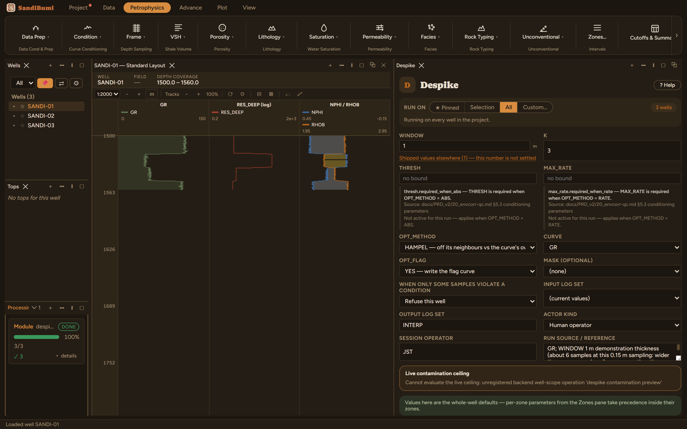

Despike replaces samples that stand off their neighbours with the local
median, writing the conditioned curve as a new curve beside the original,
plus a flag marking every sample it changed and a copy of the original values
at those samples. Run it first in any conditioning sequence: a later smoother
fits whatever is in its window, so an un-removed spike does not disappear
under smoothing, it gets spread over the window and dressed up as rock.
The physics
A spike is a tool artefact: a cycle skip, a momentary pad lift-off, a
telemetry hiccup. It is one or two samples wide, which is the whole basis for
telling it from rock, because a real thin bed is also a short excursion. The
Hampel test asks, for each sample, how far it sits from the median of the
samples inside WINDOW around it, measured in robust deviations; beyond K
deviations it is called a spike and replaced by that median. Two consequences
follow directly:
WINDOW is a thickness, not a sample count, so it means the same
amount of rock whatever the sampling.
A bed no thicker than the window is indistinguishable from a
spike and will be flattened. Set the window narrower than the thinnest
bed you intend to keep.
The picks and why
WINDOW 1 m: a demonstration thickness, about 6 samples at
this dataset's 0.15 m sampling, wider than any one-sample spike and
narrower than the beds worth keeping.
K 3 (shipped): the ordinary three-deviation convention. Run live
on these wells: at K 3, 61 samples are replaced (the largest
change 6.4 gAPI); loosened to K 6, only 9 samples still
read as spikes. K is the tolerance dial, and the count it controls is
exactly the population you should eyeball before trusting it.
Step by step
Open Petrophysics ▸ Condition ▸ Despike.
Pick the curve, set WINDOW below your thinnest keepable bed, and leave
K at 3 unless the replaced population argues otherwise.
Fill the custody line and press Run Despike.
A thickness and a tolerance. The method select offers the
Hampel test and its alternatives.
Reading the result
3 clean, with 61 of 1185 samples replaced and every one of
them flagged. The three companion curves are the audit trail: the flag says
which samples changed, the original-values curve says what they were, and
together they make the operation fully reversible by inspection. Check the
population in the Database Inspector:
SELECT COUNT(*) FILTER (WHERE value = 1)
FROM computed_curves WHERE curve_name = 'GR_C_SPK'

61 replacements, each flagged and each original value kept.
QC and pitfalls
Overlay the conditioned curve, the original and the flag in one track.
Replacements should sit on isolated one-to-two-sample excursions; a run
of consecutive flags means the window has started eating a bed.
The conditioned output takes the input curve's name with a _C suffix,
and the Condition modules share that convention: conditioning the same
input twice overwrites the first result. To chain operations (despike
then smooth), feed the despiked output into the next module rather than
the raw curve.
Despiking a curve you will later use for spike-sensitive QC (bad-hole
detection reads the caliper's real excursions) removes the very evidence
that QC needs. Condition interpretation inputs, not QC inputs.